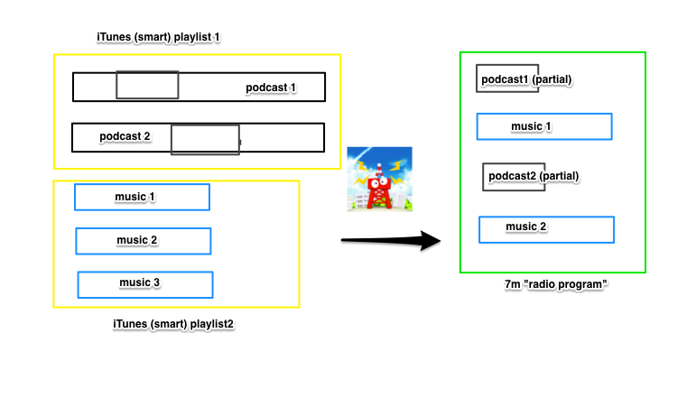
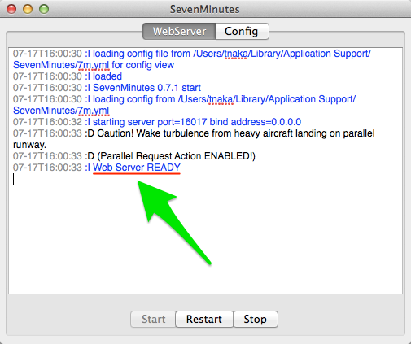
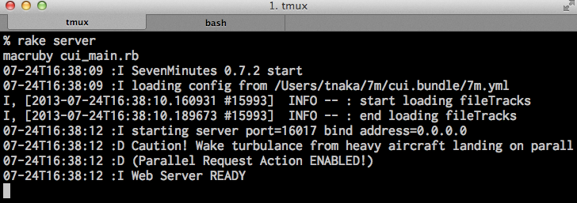

7m
an ubiquitous personal radio
Created by Taku NAKAJIMA / @essa

an ubiquitous personal radio
You can play audio contents of iTunes on...
- pc / mac browsers
- iPhone / iPad (iRadio)
- Android smart phones / tablets(ServeStream)
- dedicated player app (comming soon)
- any mp3 player that supports m3u playlist
an ubiquitous personal radio
Reduce bitrate realtime
good for slow 3g connection
an ubiquitous personal radio
sync realtime
- You can pause a long track on PC
- and contiue it on iPhone
- without syncing
- and vice versa
an ubiquitous personal radio
play offline with Dropbox
create a combined mp3 file for playlists
an ubiquitous personal radio
remix podcasts and musics
an ubiquitous personal radio
A "Radio Program" in SevenMinute
- uses iTunes playlists as a source
- picks up some tracks from sources
- mixes them up
- create a new combined playlist in real time
- refresh tracks on demand anytime, so you can listen new distributed podcasts
an opensource ubiquitous personal radio
- MacRuby
- coffeescript / backbone.js / jqueryMobile
- common GUI source written with phonegap
- player written by jPlayer(for browsers) / as phonegap plugin(for ios app)
an opensource ubiquitous personal radio
CUI / GUI mode
 an opensource ubiquitous personal radio
GUI mode
- all in one distribution
- click icon / run in window
- for users
CUI mode
- checkout the repository
- run in terminal
- for developers
an opensource ubiquitous personal radio
phonegap plugins (will be separated later)
- http audio streaming (AVPlayer)
- remote control
- audio session interruption handling (Alarm, etc...)
an opensource ubiquitous personal radio
control_tower_ext (will be separated later)
- refactored ControlTower and added some function
- restart
- http range request